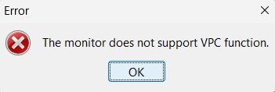

Multi Monitor Manager
Inicio
Compatibilidad
Descarga
Guía de Uso
Soporte
Acerca de
Donaciones
La herramienta está desarrollada en
Java, versión 10 o superior
, por lo que necesitarás tener Java instalado en tu sistema.
El programa no dispone de firma digital aún, por lo que a la hora de la descarga o primera ejecución, tanto el navegador web como el antivirus pueden dar un falso positivo.
Este problema se resolverá en futuras versiones, cuando la herramienta esté más avanzada, agradezco tu comprensión y paciencia mientras trabajo en mejorar y optimizar la herramienta para brindarte la mejor experiencia posible.

Si al intentar cambiar la entrada salta esta ventana de la imagen superior, indica que tu monitor no cuenta con DDC, por lo que no se puede controlar mediantes codigos VCP, unicamente podras apagarlo desde el programa.
Es importante que Java tenga permisos de administrador, ya que se utiliza la API User32 de Windows para comunicarse con el monitor. Los comandos VCP (Virtual Control Panel) hacen uso de JNA (Java Native Access) para interactuar directamente con User32.
Si encuentras algún problema o tienes alguna pregunta sobre la compatibilidad de tu monitor, no dudes en ponerte en
contacto
.
Copyright ©2024 jwo1991
Todos los derechos reservados.